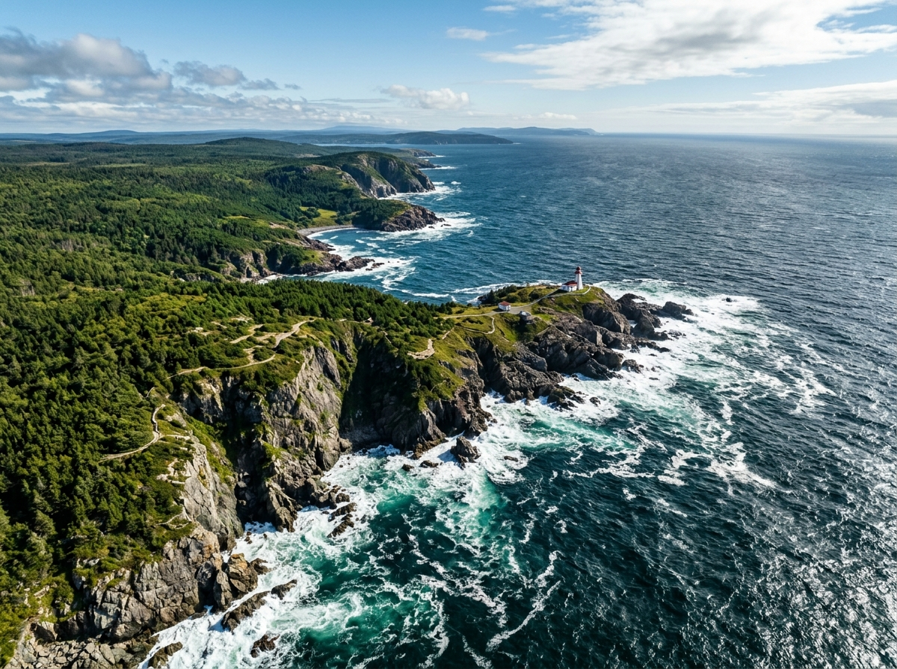

Our work
A world of stories.
Wildlife rescue and ocean exploration. Ancient mysteries and modern machines. Familiar things with unfamiliar histories.
Featured productions
-

Hope for Wildlife
Every animal has a story. Every rescue offers a chance.
At a wildlife rehabilitation centre in Nova Scotia, Hope Swinimer and her team care for injured and orphaned wild animals, working toward the moment they can return them to the wild. Moving, funny and unpredictable, Hope for Wildlife follows the patients and the people who refuse to give up on them.
-

How We Got
The things we take for granted have extraordinary pasts.
How We Got follows the inventions, accidents, obsessions and unlikely connections that shaped modern life. From a skateboard’s four wheels to the ideas that changed how we live, this is the surprising story of how we arrived here.
Our story is cooler and stranger than we think.
-

Mega Marine Machines
Big water. Bigger challenges.
Meet the remarkable machines built to work on, under and around the water, and the people who design, operate and depend on them. Mega Marine Machines gets close to the engineering and ingenuity required to take on an unforgiving environment.
-

Canada Over the Edge / America Over the Edge
A different altitude. A different understanding.
These aerial journeys reveal coastlines, landscapes and communities from a spectacular perspective, uncovering the geography and history that connect the places below.
-

Viking Quest
How far did they go? What did they leave behind?
Following the clues to Viking exploration, Viking Quest brings history into the field, where evidence, adventure and enduring questions meet.
-

Ghost Ships
The voyage ended. The story didn’t.
Beneath the surface lie wrecks with unfinished stories. Ghost Ships explores the mysteries surrounding lost vessels and the discoveries that bring their histories back into view.
From the catalogue
Selected titles from roughly 500 hours of factual programming.
Looking for something specific? The catalogue spans natural history, engineering, history, investigation and aerial documentary — ask us.